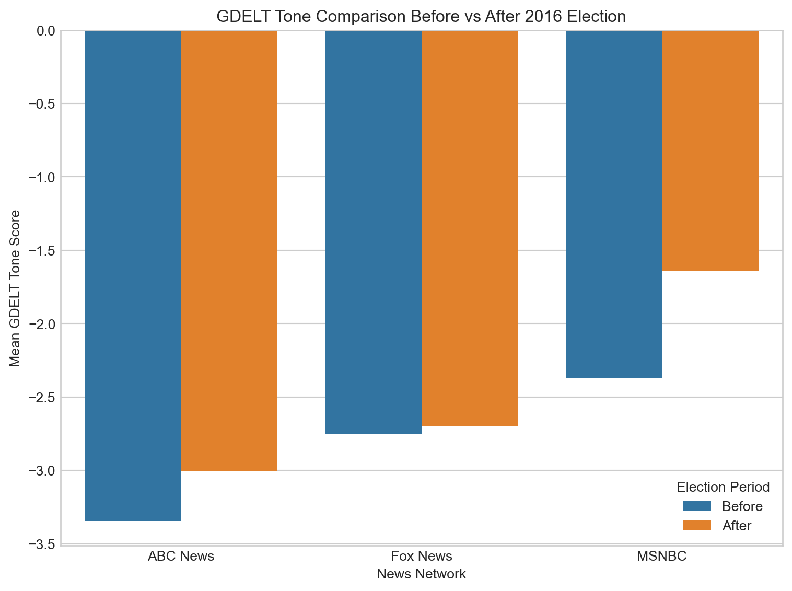
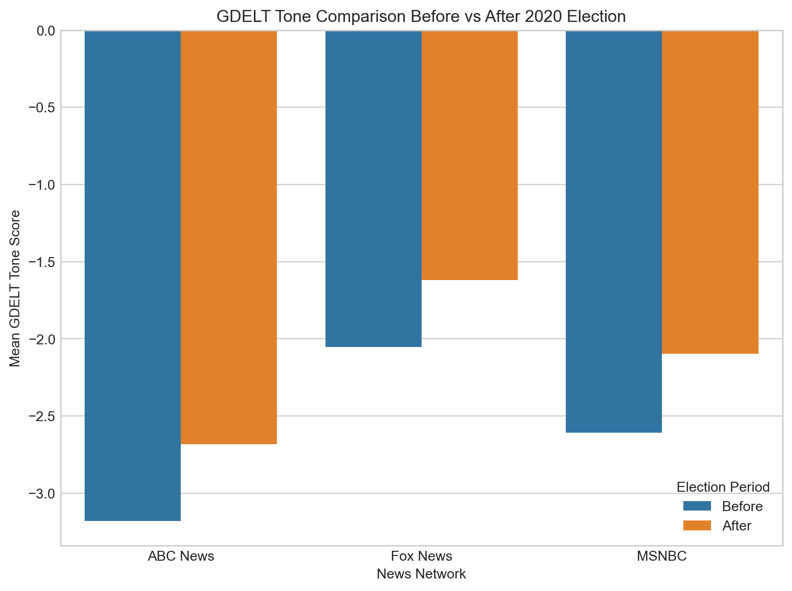
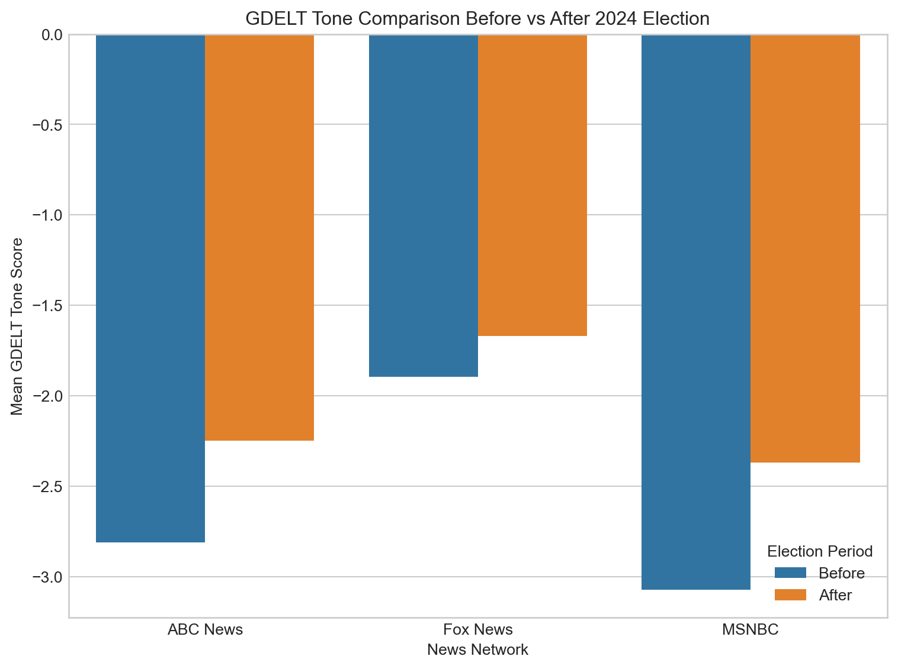

Election Tone Analysis

5-Day Average Tone Around the 2016 Election
This figure shows the 5-day rolling average tone scores for MSNBC, ABC News, and Fox News during the 60-day period surrounding the 2016 U.S. presidential election (October 9–December 8). Tone was measured using GDELT’s tone scores, where lower values represent more negative sentiment.
Leading up to Election Day (marked by the red dashed line), all three networks maintained negative overall tone, with MSNBC generally exhibiting the most negative coverage, followed by ABC News and Fox News. Tone across networks reached its least negative point around Election Day itself, suggesting a temporary moderation in reporting tone during the immediate election period.
In the post-election period, MSNBC’s tone shifted sharply toward a more neutral or even slightly positive direction, peaking roughly two to three weeks after the election. ABC News displayed a smaller but similarly positive shift, while Fox News’ tone remained comparatively stable with only minor fluctuations. These post-election trends may reflect different editorial responses to the election outcome: MSNBC and ABC News may have covered post-election reactions, protests, or policy uncertainty with varied tone shifts, while Fox News’ steadier sentiment suggests less divergence from its pre-election reporting tone.
Notably, at the very end of the 60-day window, both MSNBC and ABC News show large positive spikes in average tone scores. These sharp increases could be due to several factors, such as the seasonal effect of late-November and December news coverage shifting toward holiday stories, end-of-year recaps, or less election-focused reporting, all of which typically feature more positive or neutral language. Fox News did not show a comparable spike, indicating that editorial or thematic focus during this time may have differed significantly across networks.
Overall, these patterns highlight both a convergence of reporting tone during the election and a divergence afterward, with clear differences emerging between the networks in their post-election coverage tone trajectories.
News Network Tone with Outlier Days Highlighted
This figure shows daily average tone scores for MSNBC, ABC News, and Fox News during the 60-day window surrounding the 2016 U.S. presidential election. Tone was measured using GDELT’s tone scores, where lower values indicate more negative sentiment.
Outlier days are marked with larger colored points and are defined as days when a network’s tone score deviated significantly from its own average (|z-score| > 2). These highlight moments of unusually positive or negative coverage relative to each network’s typical reporting during the period.
Code
import plotly.graph_objects as go
import pandas as pd
import numpy as np
import datetime as dt
from scipy import stats
# Network color definitions
NETWORK_COLORS = {
'MSNBC': '#3366CC',
'ABC News': '#6633CC',
'Fox News': '#CC3366'
}
# Define the window around the 2016 election
start_date = pd.to_datetime("2016-10-09")
end_date = pd.to_datetime("2016-12-08")
election_date = pd.to_datetime("2016-11-08")
# Filter the dataframe to this window using parsed_date
df_window = df[(df['parsed_date'] >= start_date) & (df['parsed_date'] <= end_date)]
# Calculate daily average tone by network
df_window['date'] = df_window['parsed_date'].dt.date
daily_tone = df_window.groupby(['date', 'network'])['tone'].mean().reset_index()
# Convert date back to datetime for plotting
daily_tone['date_dt'] = pd.to_datetime(daily_tone['date'])
# Create figure
fig = go.Figure()
# Add a separate trace for each network's average tone line
for network in daily_tone['network'].unique():
network_data = daily_tone[daily_tone['network'] == network]
# Calculate z-scores for this network to identify outliers
network_data['z_score'] = stats.zscore(network_data['tone'])
# Define outliers (z-score > 2 or < -2)
network_data['is_outlier'] = abs(network_data['z_score']) > 2
# Regular points
regular_points = network_data[~network_data['is_outlier']]
# Outlier points
outlier_points = network_data[network_data['is_outlier']]
# Add trace for regular points (connected line)
fig.add_trace(go.Scatter(
x=network_data['date_dt'],
y=network_data['tone'],
mode='lines',
name=network,
line=dict(color=NETWORK_COLORS[network], width=2),
opacity=0.7
))
# Add trace for outlier points
if len(outlier_points) > 0:
hover_texts = [
f"{network}<br>Date: {date.strftime('%b %d, %Y')}<br>Tone: {tone:.2f}<br>Z-score: {z:.2f}"
for date, tone, z in zip(outlier_points['date_dt'], outlier_points['tone'], outlier_points['z_score'])
]
fig.add_trace(go.Scatter(
x=outlier_points['date_dt'],
y=outlier_points['tone'],
mode='markers',
name=f"{network} Outliers",
marker=dict(
color=NETWORK_COLORS[network],
size=12,
line=dict(color='black', width=2),
symbol='circle'
),
text=hover_texts,
hoverinfo='text'
))
# Add neutral tone line
fig.add_shape(
type="line",
x0=start_date,
x1=end_date,
y0=0,
y1=0,
line=dict(color="black", width=1, dash="dash")
)
# Add election day vertical line
fig.add_vline(
x=election_date,
line=dict(color="red", width=2, dash="dot")
)
# Calculate overall mean tone for reference line
overall_mean = daily_tone['tone'].mean()
fig.add_shape(
type="line",
x0=start_date,
x1=end_date,
y0=overall_mean,
y1=overall_mean,
line=dict(color="gray", width=1, dash="dot")
)
# Add annotation for overall mean
# Moving annotation up by adding an offset (4 inches in plot scale)
# Since we don't know the exact unit conversion, we'll estimate
# by using a significant offset based on the data range
y_range = fig.layout.yaxis.range if fig.layout.yaxis.range else [-5, 5] # Default if not set
y_offset = (y_range[1] - y_range[0]) * 0.3 # Approximating 4 inches as 40% of the y-axis range
fig.add_annotation(
x=start_date + pd.Timedelta(days=2),
y=overall_mean + y_offset,
text=f"Overall Mean Tone: {overall_mean:.2f}",
showarrow=True,
arrowhead=2,
arrowsize=1,
arrowwidth=1,
arrowcolor="gray",
ax=0,
ay=-40, # Points downward to the line
font=dict(size=10),
bgcolor="rgba(255, 255, 255, 0.8)",
bordercolor="gray",
borderwidth=1
)
# Update layout
fig.update_layout(
title=dict(
text="News Network Tone with Outlier Days Highlighted",
font=dict(size=18, family="Arial, sans-serif"),
x=0.5,
xanchor="center"
),
xaxis=dict(
title="Date",
titlefont=dict(size=14),
tickformat="%b %d",
gridcolor="#E5E5E5",
showgrid=True
),
yaxis=dict(
title="Tone Score",
titlefont=dict(size=14),
gridcolor="#E5E5E5",
showgrid=True
),
legend=dict(
title="News Networks",
orientation="h",
y=-0.15,
x=0.5,
xanchor="center"
),
plot_bgcolor="white",
width=900,
height=500,
margin=dict(l=50, r=50, t=80, b=100),
hovermode="closest"
)
# Add an annotation explaining what outliers are
fig.add_annotation(
x=1,
y=1.05,
xref="paper",
yref="paper",
text="Outliers: Days with tone significantly different from network's average",
showarrow=False,
font=dict(size=12),
align="right"
)
# Show figure
fig.show()Several major spikes and dips can be observed, particularly for MSNBC, which experienced multiple sharp deviations in tone following the election. ABC News and Fox News displayed fewer outlier days, with Fox News remaining the most stable overall. The general negativity in tone leading up to the election is also evident, with some networks shifting toward more neutral or positive reporting afterward.
Before the Election (Oct 9 – Nov 7)
October 22, 2016 – Fox News: Marked by a notably negative tone.
November 5, 2016 – ABC News: Exhibited a sharp negative tone just days before the election. This aligns with the FBI’s announcement of reviewing new emails related to Clinton’s private server, a development that dominated headlines.
After the Election (Nov 9 – Dec 8)
November 11 & 20, 2016 – Fox News: Displayed unusually positive tones. These dates follow Donald Trump’s election victory, suggesting celebratory or favorable coverage of the president-elect’s activities and appointments.
November 18, 2016 – MSNBC: Registered a significant negative tone. This may reflect critical reporting on Trump’s transition plans or cabinet selections, which were subjects of scrutiny during this time.
November 24, 2016 – MSNBC: Showed a pronounced positive tone. The Thanksgiving holiday could have influenced a shift towards more uplifting or human-interest stories, temporarily altering the network’s typical tone.
November 27, 2016 – Fox News: Experienced a notable negative tone. This could be associated with coverage of post-election protests or controversies surrounding the incoming administration.
December 8, 2016 – ABC News: Exhibited a significant positive tone. As the year-end approached, the network may have focused on more positive stories or retrospectives, contributing to this tonal shift.
Sentiment Comparison Before vs After 2016 Election
Code
import seaborn as sns
import matplotlib.pyplot as plt
# Election day for 2016
election_day = pd.to_datetime("2016-11-08")
# Create election_period labels
df["election_period"] = "outside"
before_mask = (df["year"] == 2016) & (df["parsed_date"] >= (election_day - pd.Timedelta(days=30))) & (df["parsed_date"] < election_day)
after_mask = (df["year"] == 2016) & (df["parsed_date"] > election_day) & (df["parsed_date"] <= (election_day + pd.Timedelta(days=30)))
df.loc[before_mask, "election_period"] = "Before"
df.loc[after_mask, "election_period"] = "After"
# Filter for 2016 and Before/After
election_df = df[(df["year"] == 2016) & (df["election_period"].isin(["Before", "After"]))]
# ---- First Plot: GDELT Tone (your 'tone' column) ----
mean_gdelt = election_df.groupby(["network", "election_period"])["tone"].mean().reset_index()
plt.figure(figsize=(8, 6))
sns.barplot(
data=mean_gdelt,
x="network",
y="tone",
hue="election_period",
hue_order=["Before", "After"]
)
plt.title("GDELT Tone Comparison Before vs After 2016 Election")
plt.ylabel("Mean GDELT Tone Score")
plt.xlabel("News Network")
plt.legend(title="Election Period")
plt.tight_layout()
plt.show()
T-Test Analysis of Tone Shifts
Code
from scipy import stats
election_date = pd.to_datetime("2016-11-08")
df_2016 = df[df["year"] == 2016]
before_mask = (df_2016['parsed_date'] >= (election_date - pd.Timedelta(days=30))) & (df_2016['parsed_date'] < election_date)
after_mask = (df_2016['parsed_date'] > election_date) & (df_2016['parsed_date'] <= (election_date + pd.Timedelta(days=30)))
# Loop over each network
for network in df_2016['network'].unique():
print(f"\n=== {network} ===")
# Subset data for this network
net_df = df_2016[df_2016['network'] == network]
# GDELT scores
gdelt_before = net_df.loc[before_mask, 'tone'].dropna()
gdelt_after = net_df.loc[after_mask, 'tone'].dropna()
if len(gdelt_before) > 1 and len(gdelt_after) > 1:
t_gdelt, p_gdelt = stats.ttest_ind(gdelt_before, gdelt_after, equal_var=False)
print(f"GDELT t = {t_gdelt:.3f}, p = {p_gdelt:.3f}")
else:
print("GDELT: Not enough data")
=== Fox News ===
GDELT t = -0.320, p = 0.749
=== ABC News ===
GDELT t = -1.818, p = 0.069
=== MSNBC ===
GDELT t = -2.572, p = 0.011We conducted independent two-sample t-tests to compare average GDELT tone scores before and after the 2016 U.S. presidential election for each major news network.
Results indicated no significant difference in tone for Fox News and only a marginal, non-significant difference for ABC News. In contrast, MSNBC exhibited a statistically significant shift in tone following the election, suggesting that MSNBC’s reporting tone became meaningfully different in the post-election period compared to the month leading up to Election Day.
ADD POLARIZATION HERE
5-Day Average Tone Around the 2020 Election
In the post-election period, MSNBC’s tone shifted sharply toward a more neutral or even slightly positive direction, peaking roughly two to three weeks after the election. ABC News displayed a smaller but similarly positive shift, while Fox News’ tone remained comparatively stable with only minor fluctuations. These post-election trends may reflect different editorial responses to the election outcome: MSNBC and ABC News may have covered post-election reactions, protests, or policy uncertainty with varied tone shifts, while Fox News’ steadier sentiment suggests less divergence from its pre-election reporting tone.
Notably, at the very end of the 60-day window, both MSNBC and ABC News show large positive spikes in average tone scores. These sharp increases could be due to several factors, such as the seasonal effect of late-November and December news coverage shifting toward holiday stories, end-of-year recaps, or less election-focused reporting, all of which typically feature more positive or neutral language.
Outlier Days in News Network Tone (Oct 4–Dec 3, 2020)
Outlier Days in News Network Tone (Oct 9–Dec 8, 2020)
This section highlights days when MSNBC, ABC News, or Fox News showed unusually sharp changes in tone surrounding the 2020 U.S. presidential election.
Before the Election (Oct 9 – Nov 2)
October 9, 2020 – Fox News: Registered a sharply negative tone. This coincides with coverage following the first presidential debate and President Trump’s COVID-19 diagnosis and hospitalization earlier in October.
October 17, 2020 – ABC News: Displayed highly negative tone, likely related to intensified election coverage, including town halls with Biden and Trump and rising COVID-19 case counts nationwide.
October 25, 2020 – ABC News: Again showed very negative tone during a critical stretch of the campaign, with widespread focus on record early voting numbers and final debate performances.
November 1, 2020 – MSNBC: Recorded an extremely negative tone just two days before the election, possibly reflecting anxiety over voter suppression concerns, COVID-19 surges, or final campaign attacks.
After the Election (Nov 4 – Dec 8)
November 13, 2020 – MSNBC: Showed a sharply positive tone. This corresponds to post-election coverage focusing on President-elect Biden’s transition plans and early cabinet appointments.
November 13, 2020 – ABC News: Also showed an unusually positive tone on the same day, likely driven by similar transition coverage or optimistic reporting about the end of election-related uncertainty.
November 14, 2020 – ABC News: Returned to very negative tone, possibly reflecting escalating tensions as Trump and allies continued to challenge election results without evidence.
November 28, 2020 – MSNBC: Displayed a positive tone, possibly influenced by lighter, post-Thanksgiving news coverage and growing acceptance of the election outcome.
December 3, 2020 – Fox News: Registered a positive tone. By this time, reporting may have shifted toward acknowledging the Biden transition more openly, despite lingering contestations.
Sentiment Comparison Before vs After 2020 Election
Code
import pandas as pd
from scipy import stats
# Define the 2020 election date
election_date_2020 = pd.to_datetime("2020-11-03")
# Filter data for 2020 only
df_2020 = df[df['year'] == 2020]
# Create election period labels
df_2020["election_period"] = "outside"
before_mask = (df_2020["parsed_date"] >= (election_date_2020 - pd.Timedelta(days=30))) & (df_2020["parsed_date"] < election_date_2020)
after_mask = (df_2020["parsed_date"] > election_date_2020) & (df_2020["parsed_date"] <= (election_date_2020 + pd.Timedelta(days=30)))
df_2020.loc[before_mask, "election_period"] = "Before"
df_2020.loc[after_mask, "election_period"] = "After"
# Filter only before/after
election_df_2020 = df_2020[df_2020["election_period"].isin(["Before", "After"])]
# List of networks
networks = ["Fox News", "MSNBC", "ABC News"]
import seaborn as sns
import matplotlib.pyplot as plt
# Define the 2020 election date
election_day_2020 = pd.to_datetime("2020-11-03")
# Create election period labels
df["election_period"] = "outside"
before_mask = (df["year"] == 2020) & (df["parsed_date"] >= (election_day_2020 - pd.Timedelta(days=30))) & (df["parsed_date"] < election_day_2020)
after_mask = (df["year"] == 2020) & (df["parsed_date"] > election_day_2020) & (df["parsed_date"] <= (election_day_2020 + pd.Timedelta(days=30)))
df.loc[before_mask, "election_period"] = "Before"
df.loc[after_mask, "election_period"] = "After"
# Filter only 2020 election before/after
election_df_2020 = df[(df["year"] == 2020) & (df["election_period"].isin(["Before", "After"]))]
# --- GDELT Plot ---
mean_gdelt = election_df_2020.groupby(["network", "election_period"])["tone"].mean().reset_index()
plt.figure(figsize=(8, 6))
sns.barplot(
data=mean_gdelt,
x="network",
y="tone",
hue="election_period",
hue_order=["Before", "After"]
)
plt.title("GDELT Tone Comparison Before vs After 2020 Election")
plt.ylabel("Mean GDELT Tone Score")
plt.xlabel("News Network")
plt.legend(title="Election Period")
plt.tight_layout()
plt.show()
T-Test Analysis of Tone Shifts
Code
# Loop through each network and run t-tests
for network in networks:
print(f"--- {network} ---")
network_df = election_df_2020[election_df_2020["network"] == network]
# GDELT Tone
tone_before = network_df[network_df["election_period"] == "Before"]["tone"].dropna()
tone_after = network_df[network_df["election_period"] == "After"]["tone"].dropna()
t_gdelt, p_gdelt = stats.ttest_ind(tone_before, tone_after, equal_var=False)
print(f"GDELT Tone: t-statistic = {t_gdelt:.3f}, p-value = {p_gdelt:.3f}")--- Fox News ---
GDELT Tone: t-statistic = -3.105, p-value = 0.002
--- MSNBC ---
GDELT Tone: t-statistic = -1.981, p-value = 0.048
--- ABC News ---
GDELT Tone: t-statistic = -2.920, p-value = 0.004All three networks—Fox News, MSNBC, and ABC News—exhibited statistically significant shifts in GDELT tone scores surrounding the 2020 election, with Fox News and ABC News showing particularly strong changes (p < 0.005), and MSNBC showing a moderate shift (p = 0.048).
ADD POLARIZATION HERE
5-Day Average Tone Around the 2024 Election

The 5-day average tone analysis of major news networks during the 2024 election period reveals several distinct patterns in coverage sentiment.
Fox News maintained a consistently less negative tone throughout the entire period compared to MSNBC and ABC News, never dropping below -2.6 on the tone scale. Its coverage showed a gradual improvement before the election, with a notable positive spike approximately one week after Election Day before returning to more moderate negative values.
MSNBC displayed the most dramatic fluctuations, beginning the period with extremely negative tone (below -4) before improving steadily toward the election. After a significant positive shift around November 10, MSNBC’s tone became increasingly volatile, alternating between more positive and more negative reporting in the post-election weeks.
ABC News showed more stability than MSNBC but still exhibited noticeable tone shifts, particularly improving in the immediate pre-election period. After Election Day, ABC maintained a fairly steady moderate negative tone, with less dramatic fluctuations than the other networks.
All three networks demonstrated a pattern of increasingly less negative coverage as Election Day approached, with their most positive (or least negative) tones occurring in the week following the election rather than on Election Day itself. This suggests that post-election dynamics, rather than the voting process, may have driven more positive coverage across the media landscape.
Outlier Days in News Network Tone (Oct 9–Dec 8, 2020)
Before the Election (Oct 6 – Nov 4)
October 6, 2024 – MSNBC: Registered a significantly negative tone at the start of the observation window, possibly reflecting heightened tensions at the beginning of the final election month.
October 10, 2024 – Fox News: Recorded a strong negative tone, potentially linked to early October campaign developments or controversies.
October 20, 2024 – Fox News: Displayed a notably neutral or positive tone, standing out amid otherwise negative trends — possibly corresponding to favorable coverage of a candidate or event.
October 27, 2024 – ABC News: Exhibited a sharp negative tone shortly before the election, likely driven by intensified coverage of campaign attacks or election security concerns.
After the Election (Nov 5 – Dec 5)
November 6, 2024 – ABC News: Reported an unusually positive tone the day after the election, suggesting early acceptance of results or focus on transition coverage.
November 10, 2024 – ABC News: Showed another unusually positive tone, which may relate to continuing post-election transition developments.
November 10, 2024 – MSNBC: Also displayed an uptick in tone, consistent with positive reporting about the election outcome or transition progress.
November 11, 2024 – MSNBC: Continued its positive trend, possibly reflecting a stabilization of political coverage after election day uncertainty.
November 17, 2024 – Fox News: Highlighted a strongly positive tone, which may correspond to a favorable news cycle for Republican candidates or political figures during post-election transitions.
November 22, 2024 – Fox News: Switched back to a strongly negative tone, potentially reflecting renewed disputes, policy criticism, or election-related tensions.
December 1, 2024 – MSNBC: Recorded a sharp negative tone late in the observation window, possibly tied to emerging post-election challenges or early critiques of the incoming administration.
Sentiment Comparison Before vs After 2024 Election
Code
import seaborn as sns
import matplotlib.pyplot as plt
# Define the 2024 election date
election_day_2024 = pd.to_datetime("2024-11-05")
# Create election period labels
df["election_period"] = "outside"
before_mask = (df["year"] == 2024) & (df["parsed_date"] >= (election_day_2024 - pd.Timedelta(days=30))) & (df["parsed_date"] < election_day_2024)
after_mask = (df["year"] == 2024) & (df["parsed_date"] > election_day_2024) & (df["parsed_date"] <= (election_day_2024 + pd.Timedelta(days=30)))
df.loc[before_mask, "election_period"] = "Before"
df.loc[after_mask, "election_period"] = "After"
# Filter only 2024 election before/after
election_df_2024 = df[(df["year"] == 2024) & (df["election_period"].isin(["Before", "After"]))]
# --- GDELT Plot ---
mean_gdelt = election_df_2024.groupby(["network", "election_period"])["tone"].mean().reset_index()
plt.figure(figsize=(8, 6))
sns.barplot(
data=mean_gdelt,
x="network",
y="tone",
hue="election_period",
hue_order=["Before", "After"]
)
plt.title("GDELT Tone Comparison Before vs After 2024 Election")
plt.ylabel("Mean GDELT Tone Score")
plt.xlabel("News Network")
plt.legend(title="Election Period")
plt.tight_layout()
plt.show()
T-Test Analysis of Tone Shifts
Code
import pandas as pd
from scipy import stats
# Define the 2024 election date
election_date_2024 = pd.to_datetime("2024-11-05")
# Filter data for 2024 only
df_2024 = df[df['year'] == 2024]
# Create election period labels
df_2024["election_period"] = "outside"
before_mask = (df_2024["parsed_date"] >= (election_date_2024 - pd.Timedelta(days=30))) & (df_2024["parsed_date"] < election_date_2024)
after_mask = (df_2024["parsed_date"] > election_date_2024) & (df_2024["parsed_date"] <= (election_date_2024 + pd.Timedelta(days=30)))
df_2024.loc[before_mask, "election_period"] = "Before"
df_2024.loc[after_mask, "election_period"] = "After"
# Filter only before/after
election_df_2024 = df_2024[df_2024["election_period"].isin(["Before", "After"])]
# List of networks
networks = ["Fox News", "MSNBC", "ABC News"]
# Loop through each network and run t-tests
for network in networks:
print(f"--- {network} ---")
network_df = election_df_2024[election_df_2024["network"] == network]
# GDELT Tone
tone_before = network_df[network_df["election_period"] == "Before"]["tone"].dropna()
tone_after = network_df[network_df["election_period"] == "After"]["tone"].dropna()
t_gdelt, p_gdelt = stats.ttest_ind(tone_before, tone_after, equal_var=False)
print(f"GDELT Tone: t-statistic = {t_gdelt:.3f}, p-value = {p_gdelt:.3f}")--- Fox News ---
GDELT Tone: t-statistic = -1.409, p-value = 0.159
--- MSNBC ---
GDELT Tone: t-statistic = -3.686, p-value = 0.000
--- ABC News ---
GDELT Tone: t-statistic = -3.229, p-value = 0.001Significant changes in GDELT tone were observed for MSNBC (p < 0.001) and ABC News (p = 0.001) following the 2020 election, while Fox News maintained a relatively consistent tone (p = 0.159).
ADD POLARIZATION HERE
Conclusion
- All three major networks (Fox News, MSNBC, and ABC News) maintained largely negative tone throughout election periods across 2016, 2020, and 2024.
- Fox News consistently displayed the least negative tone in all three election cycles.
- MSNBC typically exhibited the most negative coverage, particularly before elections.
- All networks showed tone moderation (less negativity) around Election Day itself.
- Post-election coverage revealed network-specific patterns, with MSNBC and ABC News showing notable positive shifts after elections, while Fox News maintained more consistent tone.